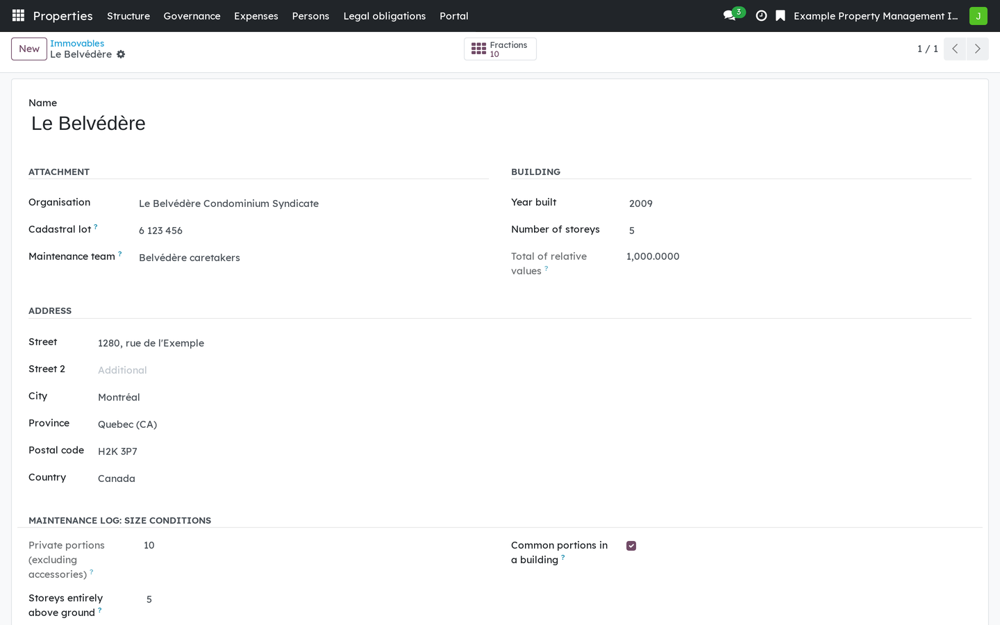
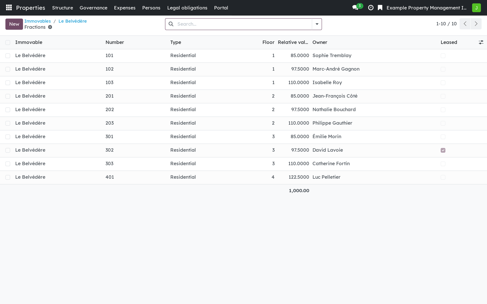
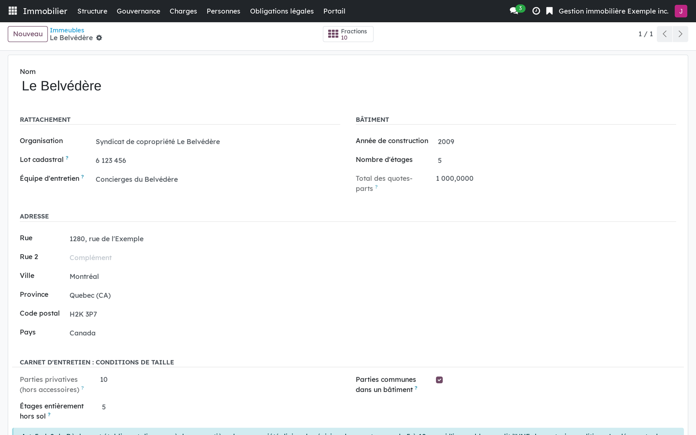
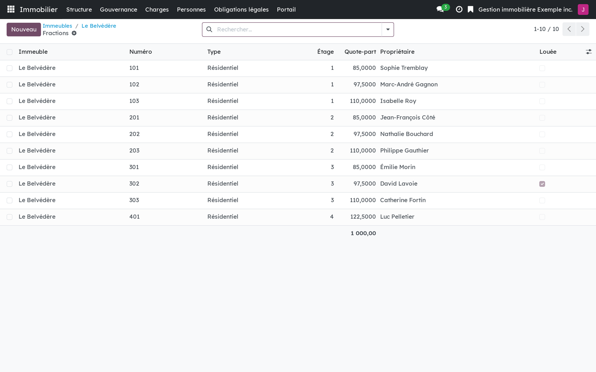

Version française plus bas.
This module holds the structure of a building in Odoo 18 Community: the organisation that answers for the immovable, the immovable itself, its fractions, its common portions, and the people who own or occupy them. It is written for Québec, where the Civil Code decides what that structure has to record. A syndicate of co-ownership, a lessor, a housing cooperative and a non-profit housing organisation all start here, and the co-ownership and rental modules add their own rules on top.

An immovable, the organisation that answers for it, and the total of relative values of its fractions.

The fractions of an immovable, each with its relative value and its current holders.
This is software, not legal advice. An organisation remains responsible for the decisions it takes.
This module depends on base and mail only. The nineteen modules of the suite fall into three groups.
Every building
bf_property_core), this modulebf_property_operations), equipment, schedules and work shifts on Odoo Maintenancebf_property_operations_portal)bf_property_operations_privacy)Divided co-ownership
bf_property_governance)bf_property_finance)bf_property_records)bf_property_portal)bf_property_operations_records)bf_property_privacy)bf_property_securetransfer)bf_property_sign)bf_property_sms)bf_property_cx)Residential rental
bf_rental)bf_rental_notice)bf_rental_rent)bf_rental_portal)bf_rental_privacy)The interface is available in French and in English, with the vocabulary of the official English text of the Civil Code of Québec.
Business Source License 1.1. You may use this module in production for your own internal business operations, which include administering immovables that you own or that you are constituted to administer, and letting a person acting on your behalf use your instance for that purpose. Administering immovables for the account of others, or providing the module to third parties as a product or service, whether hosted, managed or resold, requires a separate written agreement with the licensor. Each version converts to LGPL-3.0-or-later on the Change Date stated in the LICENSE file, which sets out the exact terms.
Ce module tient la structure d'un immeuble dans Odoo 18 Community : l'organisation qui en répond, l'immeuble, ses fractions, ses parties communes, et les personnes qui les possèdent ou les occupent. Il est écrit pour le Québec, où le Code civil dit ce que cette structure doit consigner. Un syndicat de copropriété, un bailleur, une coopérative d'habitation et un OBNL d'habitation partent tous d'ici ; les modules de copropriété et de location y ajoutent leurs propres règles.

Un immeuble, l'organisation qui en répond, et le total des quotes-parts de ses fractions.

Les fractions d'un immeuble, chacune avec sa quote-part et ses titulaires actuels.
Ce logiciel ne donne pas d'avis juridique. L'organisation reste responsable des décisions qu'elle prend.
Ce module ne dépend que de base et de mail. Les dix-neuf modules de la suite se rangent en trois groupes.
Tout immeuble
bf_property_core), le présent modulebf_property_operations), équipements, cédules et quarts de travail sur la Maintenance d'Odoobf_property_operations_portal)bf_property_operations_privacy)Copropriété divise
bf_property_governance)bf_property_finance)bf_property_records)bf_property_portal)bf_property_operations_records)bf_property_privacy)bf_property_securetransfer)bf_property_sign)bf_property_sms)bf_property_cx)Location résidentielle
bf_rental)bf_rental_notice)bf_rental_rent)bf_rental_portal)bf_rental_privacy)L'interface existe en français et en anglais ; l'anglais reprend le vocabulaire du texte anglais officiel du Code civil du Québec.
Business Source License 1.1. Vous pouvez utiliser ce module en production pour vos propres activités internes, ce qui comprend l'administration des immeubles dont vous êtes propriétaire ou que vous êtes constitué pour administrer, et l'usage de votre instance à cette fin par une personne qui agit pour votre compte. Administrer des immeubles pour le compte d'autrui, ou fournir le module à des tiers comme produit ou service, hébergé, géré ou revendu, exige une entente écrite distincte avec le concédant. Chaque version passe sous LGPL-3.0 ou ultérieure à la date de changement inscrite au fichier LICENSE, qui fait foi.